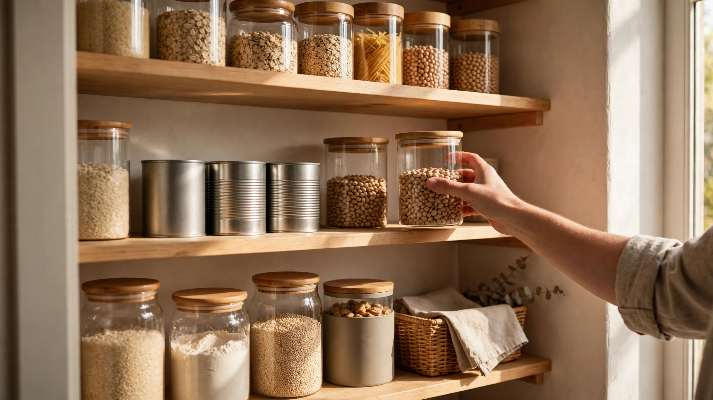

The pantry check that cuts your weekly bill

Most kitchens already hold a week of meals — they are just hiding behind closed cupboard doors. Pantry staples that save money are the dry goods, canned goods and frozen basics most households already own: rice, pasta, beans, oats, canned tomatoes, stock, flour and oil. The pantry check is a five-minute habit before every shop: look at what you own, build the week’s meals from it, and buy only what is missing. It cuts the bill twice — once by stopping duplicate purchases, and once by turning food you already paid for into meals instead of waste.
1. Shop your pantry first
Before you write a list or open a store app, open the cupboards. Pull out everything you can see, and make a short list of what is actually there — not what you think is there. Most households find the same surprises: three half-used bags of rice, two cans of beans bought twice, a pasta shape nobody remembers buying. Those duplicates are money already spent, sitting on a shelf. Write the list on paper or on your phone, and keep it where the shopping list lives: the pantry list is the first half of the shopping list, because everything on it is something you do not need to buy. This is the same pantry-first habit at the heart of our 15-minute weekly routine — the check that makes the rest of the routine work.
2. The pantry staples that save money
A working pantry is built on staples that keep well, cost little per meal, and combine into many dishes. The core list is short: rice and pasta; dried or canned beans, lentils and chickpeas; canned tomatoes and stock; oats and flour; cooking oil and vinegar; salt, pepper and a few dried herbs; peanut butter and honey. Add frozen vegetables and frozen fruit, which keep for months and cost less than fresh out of season. These staples are the backbone because they are flexible — the same rice, beans and tomatoes become a different meal with a different spice or a different vegetable. Keep the list small on purpose: a pantry with twelve staples you actually use beats a cupboard full of one-time purchases. When a staple runs low, it goes on the shopping list; when it is in stock, it stays off.
3. Build meals from what you own
Once the pantry list is written, build the week’s meals from it in three steps. First, pick the main staple for each night — rice on Monday, pasta on Tuesday, beans on Wednesday — and write the meal next to it. Second, add the fresh items each meal needs: a vegetable, a protein, a piece of fruit. Those fresh items are the only things the shopping list needs, because the base of the meal is already in the house. Third, plan one leftovers night: the remaining rice, beans or pasta become soup, a stir-fry or a grain bowl, so nothing cooked goes to waste. This is the meals-from-what-you-own method — the meal plan follows the pantry, not the other way round, and the shopping list shrinks to the gaps.
4. The list that only buys what’s missing
With the meals planned, the shopping list writes itself: fresh items for each meal, plus any staple that ran out. Nothing else goes on it. At the store, the rule is the same as in our store brand vs name brand guide — compare the ingredients and the unit price on anything where two brands compete, and let the smaller unit price win. Skip the middle aisles you do not need, and ask the one question about every unplanned item: will your household use it before it expires? A bargain that goes bad in the fridge is not a bargain. The list that only buys what is missing is short, cheap and fast — and the receipt at the end is the proof that the check worked.
5. Keep the pantry working week after week
The check only saves money if it repeats, so make it a habit, not a project. Same day each week, same five minutes, same three moves: open the cupboards, write the pantry list, build the meals. Keep the staples stocked at a steady level — one spare bag of rice, one spare can of beans — so a low shelf never forces an emergency shop. When something sits unused for a month, move it to the front and plan a meal around it, or accept that your household does not eat it and stop buying it. And track one number: the weekly receipt total. If the total drops and stays down for a month, the pantry check is working. The saving comes from the average across the month, not from any single perfect shop.
Key takeaways
- Check the pantry before you shop: build the week’s meals from what you own, and buy only what is missing.
- Keep twelve flexible staples — rice, pasta, beans, oats, canned tomatoes, stock — and let them carry the week’s meals.
- Plan one leftovers night, and track the weekly receipt total to see the check working.
Pick one app that fits your phone, install it, and open it once so it counts — every app walked by us first.
Check today’s app picksSponsored link. For adults 18+. Availability and rewards vary by provider, country and device — nothing is guaranteed, always read the terms.
Quick questions
What counts as a pantry staple?
A staple is a dry, canned or frozen good that keeps for months, costs little per meal, and works in many dishes — rice, pasta, beans, oats, canned tomatoes and stock are the usual core.
How long does the pantry check take?
About five minutes: open the cupboards, write down what you own, and build the week’s meals from it. It is the first five minutes of the fifteen-minute weekly routine.
What if my pantry is almost empty?
Start with the core list — rice, pasta, beans, oats, canned tomatoes, stock, oil and spices — and buy one or two staples per shop until the shelf is stocked. The check still works: it stops you buying duplicates from day one.